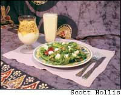

Tap the benefits of delicious fermented milk products.
Cultured dairy products - yogurt, soft cheeses, buttermilk and kefir - taste great, and are easy and fun to make at home by simply adding cultures of selected strains of yeast or bacteria to start the process of fermentation. The cultures add rich and tangy flavors to the dairy products. These cultured foods boost your immune system, provide calcium and aid your digestion. For those with lactose intolerance, these foods are also a welcome alternative. According to Steve Hertzler, assistant professor of human nutrition at Ohio State University, “The active cultures in these products convert lactose, a carbohydrate found in milk, into a more easily digestible form.”
People have been making yogurt and other cultured dairy products for thousands of years. Traces of fermented foods have been found in Mesopotamia, which is considered the birthplace of civilization, but experts suspect these foods originated with nomadic tribes of western Asia and Eastern Europe because fermentation made their dairy products easier to transport and less prone to spoilage.
Cultured foods are surprisingly quick and simple to make at home, and your homemade products can taste better than many oversugared grocery store brands. You can add your own favorite toppings such as fruits, nuts and sweeteners, too.
If you’ve ever worked with yeast or sourdough starter cultures for making bread, you’re already familiar with making cultured dairy products.epending upon what you’re making, you can use store-bought yogurt or buttermilk to develop your starter culture. Or to be certain of a good, strong culture, you can purchase a commercial starter. This is often a one-time purchase because with a little care, you can keep your family of friendly microbes hard at work for years to come.
They are not overly fussy about the fat content in milk, so you can make yogurt from whole or skim milk. Use organic milk whenever possible, and if you have access to milk from grass-fed cows, the flavor and nutrition of your yogurt will be much improved.
It’s true that humans derive many benefits from eating “living” dairy products, but the microbes that actually do the work have selfish motives. These bacteria feed on the carbohydrates in milk - namely lactose - for energy. This process creates other more acidic byproducts that impart the tangy flavor found in yogurt, buttermilk and kefir. Not all bacteria are “friendly,” so the trick is controlling the process to cultivate the types you want.
There’s no need to buy fancy machines to make yogurt or other cultured dairy products - chances are you already have everything you need right in your kitchen. The most important factor to keep in mind is that everything needs to be perfectly clean so you don’t invite any unwanted bacteria into your mix. Here’s a list of items you should gather before getting started:
Heavy-bottomed stainless steel pot
Cheesecloth
Plastic strainer
Stainless steel or plastic spoon
2 to 3 quart jars (sterilized)
Measuring cup
Instant-read thermometer
Picnic cooler (optional)
Yogurt
If you have access to good-quality commercial yogurt with live cultures, use about 3 tablespoons as your starter culture. Otherwise, purchase a commercial starter. Natural food stores usually carry both items. Temperature recommendations on packaged cultures may vary, so be sure to read the instructions before you begin.
Heat 1 quart milk to about 185 degrees, or as directed by the commercial product’s instructions. Then, allow it to cool to between 105 and 115 degrees. Stir in the culture and mix well. Pour the mixture into a quart jar and put on the lid. While the culture is forming, the temperature of the milk should remain at about 110 degrees. If you don’t have a commercial yogurt maker to regulate the temperature, try one of these ideas:
• Put the quart jar into a medium-sized picnic cooler with a couple jars of hot water, then close the cooler.
• Put the quart jar of yogurt mixture into a gas oven with a pilot light.
• Put the mixture into a thermos bottle.
• Wrap the jar of yogurt in a blanket.
Check the yogurt in four to six hours. When the curd is well formed, place the yogurt in the refrigerator. A little whey may form around the edges - simply pour it off or stir it in when you’re ready to dig in. Enjoy the yogurt plain or flavor it with honey, maple syrup or fresh fruit.
Tangier than yogurt but sweeter than buttermilk, kefir (pronounced ka-FEER) is thought to have originated in the Caucasian Mountains in Russia, where it’s still a daily food staple. You can buy packaged kefir culture, but true aficionados use kefir grains - little white kernels about the size of tapioca that swell and initiate fermentation. A good kefir involves many different types of friendly bacteria as well as some yeasts, and it packs one of the strongest health punches of all the cultured dairy foods.
Like most good cultures, kefir grains become more reactive the more they’re used. To get your culture started, place 4 tablespoons of grains into a jar and add a cup of milk. Stir gently, then allow the mixture to sit for 12 to 24 hours at room temperature. When the culture is ready, the mixture will have thickened and some whey may have separated. Strain the kefir through a sieve, gently stirring the grains (never pressing!) as the liquid drains into another container.
Place the grains into a clean container, add another cup of milk and repeat the process. To make larger batches, allow the culture to complete its process, then add twice as much milk and allow it to ferment until thickened.ouble the quantity of milk until you reach the desired amount.
As you continue to make kefir, the number of your grains will grow. You can share some of them with friends, or dry and store them in a plastic storage bag for eight to 10 months. (Allow a few extra days to get them started when you’re ready to reactivate the grains.)
Marilyn Jarzembski, a kefir enthusiast who sells grains by mail suggests moving the process to your refrigerator. The cooler temperatures will slow down the kefir process, and the grains will survive as long as two weeks without any attention.
Natural carbonation makes kefir fizzy and perfect for smoothies, popular among kefir fans. Simply pour the liquid into a blender and mix with fresh fruit such as strawberries, blueberries or mangos.
Cultured Dairy Sources
Ready-made Brands
Stonyfield Farm
Organic yogurts
www.stonyfield.com
Nancy’s
Kefir, organic yogurts
www.nancysyogurt.com
Horizon
Organic yogurts
www.horizonorganic.com
Brown Cow
All-natural yogurts
www.browncowfarm.com
Seven Stars Farm
Organic yogurts
(610) 935-1949
Make-at-home Sources
New England Cheesemaking Supply
(413) 628-3808
www.cheesemaking.com
Starter cultures, cheese molds and books.
Marilyn Jarzembski (419) 237-3095
marilynjarz@yahoo.com
Authentic kefir grains. $20 per order.
A one-time purchase can last a lifetime.
Chevre is a fresh, usually soft, goat cheese. The word “chevre” comes from France, where various chevres are popular.
Here in the United States, we’re most familiar with the smooth, creamy version. Following is a simple cheese for beginners, and a mild-flavored introduction for those who may not be familiar with the distinctive tanginess of goat cheeses. Here’s the recipe:
Heat 1 gallon of goat’s milk (cow’s milk can be substituted, but the cheese’s flavor will be more akin to cream cheese) in a large pot until it reaches 160 degrees and hold it there for 30 minutes. Then, cool the milk to about 72 degrees.
Pour the mixture into a bowl and add one package of commercial chevre culture. Cover the bowl with plastic wrap and allow it to sit at room temperature until the curds and whey separate (18 to 24 hours).
Pour the curds into a strainer lined with cheesecloth, then tie them into a bundle and allow them to drain overnight at room temperature. In the morning, salt the curds to taste.
Eat the curds plain or press them into decorative molds (see “Cultured Dairy Sources,” at right). Roll the formed cheese in fresh herbs such as chives, dill or thyme, and store your chevre in a jar covered with olive oil and herbs.
Probiotic means “for life,” and “probiotics” in cultured dairy products - yogurt, buttermilk and many soft cheeses - are nothing more than types of beneficial bacteria typically found in such foods. Traditionally, these fermented foods tend to have a smooth and tangy, yet light flavor. They help boost your immune system and are easier on the stomach than other dairy foods because the bacteria added to milk break down the natural lactose in the milk.
There are two specific strains of bacteria that are most commonly referred to as probiotics: Bifidobacterium and Lactobacillus acidophilus. These “friendly” bacteria exist naturally among the hundred or so types already present in our gastrointestinal system, but they are under constant siege by human indulgences such as when we drink coffee or alcohol, eat lots of onions and garlic, or take antibiotics. Making and eating your own cultured dairy products can ensure your body’s well-stocked with these health-enhancing “probiotic” bacteria.
Kefir Grain Exchange
http://66.46.11.99/clarkson/Show/Clark son/kefir/default.asp
Share grains with kefir enthusiasts all over the world.
|
 Goat cheese makes a great topping for salads, while kefirsmoothies and yogurt paired withfruit and granola make healthysnacks. |
Yogurt is the most popular cultured dairy food in America. |
|